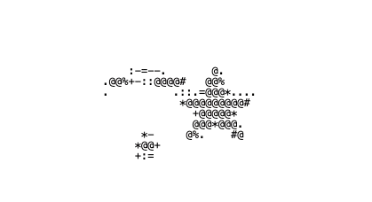
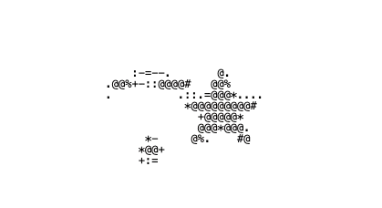

Here are some resources I’ve found helpful for researching, sourcing and identifying vintage or antique items, along with some sites for old web lovers!
‧₊˚ ⋅ For Vintage Lovers ▶
- Vintage Fashion Guild – An extensive vintage catalogue forum
- The Canadian Antique Dealers Assoc. – Marketplace & information site
- Hey Vintage – Find vintage, antique and second-hand stores near you
- Freelton Antique Mall – My favourite antique mall in Ontario
- Hamilton Antique Mall – Antique mall in Hamilton, ON
- Toronto Vintage Clothing Show – Canada's largest vintage event (in Apr. & Oct.)
‧₊˚ ⋅ For Old Web Lovers ▶
- GeoCities Archive – Explore GeoCities websites
- Neocities – Make a site like you would've on GeoCities
- Old Web Today – Browse the web in old browsers
- The Old Net – Another way to browse the old web
- Web Design Museum – Exhibition of old sites and apps
- WayBack Machine – Archive.org’s way to browse old web pages
- GifCities – GIFs sourced from GeoCities sites
- OldWebz4Youu – Tumblr full of old web resources
I’ll be updating this page with more helpful links and tools as the website grows!